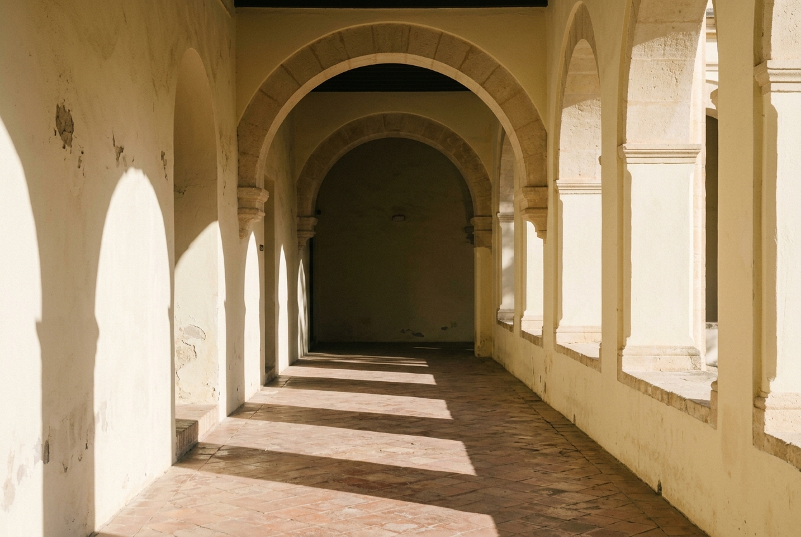
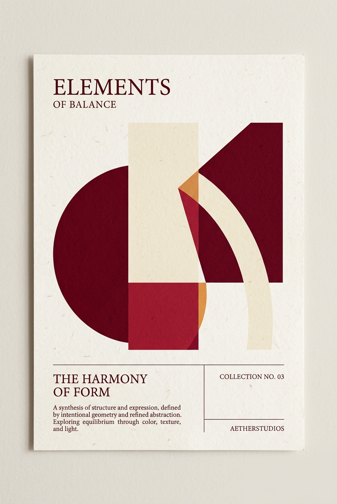
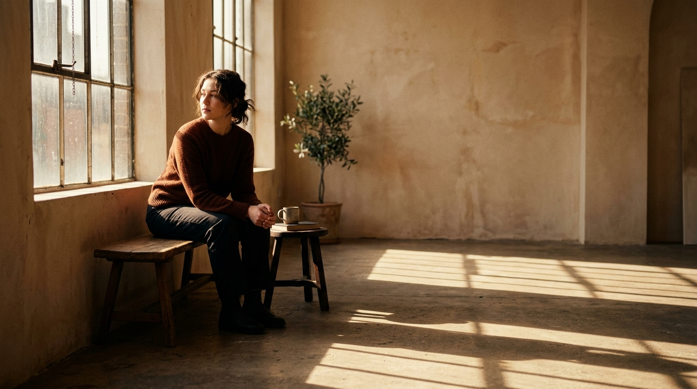

In a digital landscape dominated by rapid consumption, we choose depth. We curate structures that require pause. Our collaborations are experiments in friction, typography, and human curiosity.
We believe the modern interface has lost its weight. By treating the digital canvas with the same spatial respect as a physical book page, we create websites that are read rather than merely scanned. It is an editorial approach to user flow: structured, breathing, and deliberate.
As you scroll downwards, the screen will lock, translating your vertical motion into a horizontal voyage across our archival panels. Elements within this track will move at varying speeds, creating a multi-dimensional parallax depth. We invite you to experience the friction.
We Five is an independent team of creators working collectively. We bridge the gap between design theory and implementation, establishing digital products that resonate on a tactile, visual level.
Five multidisciplinary designers establish the studio in a brick-walled workspace in Milan, aiming to bring print pacing to the web.
Launch of our physical quarterly, "We Five Curation", distributing experimental typography layouts to independent booksellers.
Pioneering web layouts utilizing inertial-scroll kinetics, digital page-turns, and editorial-grid alignments.
Expanding into architectural spaces and interactive web journals, blending the tactile with the virtual seamlessly.
A visual spatial analysis exploring brutalist architecture inside Milanese courtyards.
Custom letterforms and grid structures designed for our physical editorial catalog.
Developing fluid digital scroll structures that mirror the tactile feedback of print.

Our photography explores light, negative space, and geometry. We capture details that feel silent, allowing the background texture of the paper or screen to interact with the visual subject.

Analyzing layouts, font metrics, and geometric grids across print artifacts to integrate physical breathing margins into standard web dimensions.
T actility is not lost in pixels. It is merely translated. By introducing micro-friction, deliberate transitions, and generous white space, we invite the viewer to touch the screen with their eyes. We create interfaces that reward slow readings.
The modern web is fast, but it is often thin. We build digital spaces that feel heavy. Not in loading times, but in visual weight and cultural resonance. Every element is set inside a structured grid, allowing for clear paths of exploration.
"Design is not the visual decoration of content. It is the architectural pacing of human understanding."
A structured breakdown of our operational boundaries and criteria. We maintain a small portfolio to ensure high-end craft for each partner.
A custom-drawn set of line symbols representing our core design elements. These vectors function as editorial markers across our projects. Hover to invert.
We start inside libraries and print archives. We catalog typographies, layouts, and historical context before translating them to active code.
We construct intentional layout weights. We craft pauses, large serif markers, and asymmetrical shapes that require the viewer's eye to process.
We build the code wrapper using GSAP and Lenis to create a smooth, mechanical translation of user motion, blending physical depth with virtual space.

You have journeyed across our digital canvas. The horizontal restraint will now release. Continue scrolling down to discover our footer space and return to standard verticality.
RELEASE SCROLL